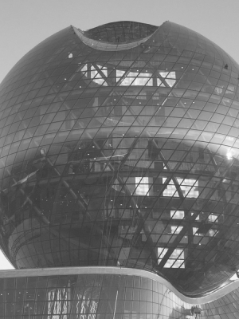

О нас

Наша Команда успешно осуществляет деятельность на нескольких рынках инвестиций. Богатство выбора инструментов этих рынков позволяет Нам успешно сохранять и преумножать капитал клиентов. Вступить в партнерство с Fonte могут как профессиональные инвестора, так и частные лица, только начинающие открывать для себя новые перспективы. Наша юрисдикция - Международный финансовый центр «Астана» (МФЦА). Комфортные налоговые условия и регуляторные политики обеспечивают необходимые свободы и преимущества для достижения целей инвестиций. В партнерстве с Fonte Capital LTD, инвесторы имеют возможность воспользоваться не только проверенными стратегиями, но и смогут совместно разработать персональные инвестиционные решения.